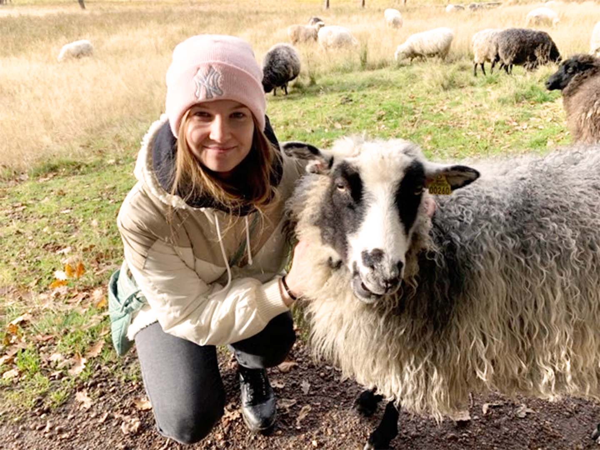

MAJ 28, 2023
Från Design till Kod: Min Resa inom Front-End Utveckling
Upplev min övergång från design till att skapa interaktiva webbgränssnitt.
Maj 28, 2023
Hej och välkommen till min blogg! Jag är så exalterad över att dela med mig av min resa till att bli en programmerare och hur jag hittade mitt kall i den digitala världen. Att vara kreativ har alltid varit en stor del av mitt liv, och det är denna passion som har drivit mig framåt i min utveckling som programmerare.
Kreativt intresse och utbildning
Under min tid på Medieinstitutet, där jag studerade Digital Content Design mellan 2020 och 2022, fick jag en bred utbildning inom olika områden, med fokus på webb- och appdesign samt användarupplevelse (UX) och användargränssnitt (UI). Jag var fascinerad av möjligheterna som dessa områden erbjöd, men det var först under min sista praktikperiod som jag verkligen fick smaka på programmeringens värld.
Upptäckten av programmering
Under min praktik samarbetade jag mycket med webbutvecklarna, och det öppnade upp en helt ny värld för mig. Jag insåg att jag inte bara ville vara hjärnan bakom designen, utan också vara den som skapar och implementerar funktionerna som gör designen levande. Det var då jag bestämde mig för att ge programmering en chans.
Mimo och FreeCodeCamp
Hösten 2022 började jag min resa in i programmeringsvärlden på egen hand, och jag stötte på appen Mimo. Mimo erbjöd interaktiva och pedagogiska lektioner som hjälpte mig att förstå grunderna i programmering. Det var en fantastisk resurs för nybörjare som mig, och jag rekommenderar verkligen appen till alla som vill komma igång.
Efter att ha blivit bekväm med de grundläggande koncepten, bestämde jag mig för att ta en djupdykning och lära mig mer om responsiv webbdesign. Det var då jag stötte på FreeCodeCamp och deras certifiering i responsiv webbdesign. Kursen var intensiv och utmanande, men jag lärde mig otroligt mycket och fick en stark grund att bygga vidare på.
Learning from the experts
Under min inlärningsresa blev Google min bästa vän och YouTube en ovärderlig resurs. Det var där jag upptäckte Kevin Powells YouTube-kanal, som erbjuder fantastiskt innehåll för både nybörjare och mer erfarna utvecklare. Genom honom hittade jag också Scrimbas "Frontend Career Path", som har varit en game-changer för min inlärning.
Scrimba och Javascript
Sedan januari 2023 har jag arbetat med Scrimbas "Frontend Career Path" och jag måste säga att jag älskar det. Scrimbas plattform tillåter användare att koda direkt i videorna. Det innebär att du kan pausa videon, redigera koden och se resultaten omedelbart. Detta hands-on-lärande ger en aktiv och praktisk inlärningsupplevelse. Det är genom Scrimba som jag verkligen har fördjupat mig i JavaScript, vilket var en utmaning jämfört med HTML och CSS.
Framtiden och varför jag älskar front-end-utveckling
Ju mer jag lär mig, desto mer vill jag lära mig. Jag känner verkligen att programmering är något jag vill satsa på och göra till min karriär. Front-end-utveckling är mitt område eftersom det tillåter mig att arbeta med design på ett mer visuellt sätt. Det är fantastiskt att göra designen funktionell och att hitta lösningar som gör den mer användarvänlig.
Sammanfattningsvis
Detta var en kort sammanfattning av min resa till att bli en programmerare och min passion för front-end-utveckling. Jag är så tacksam för de resurser och människor jag har stött på under min inlärningsresa. Jag ser fram emot att fortsätta att utforska programmeringsvärlden och lära mig nya saker varje dag. Häng med på min resa genom att följa min blogg, där jag kommer att dela med mig av mina framsteg, utmaningar och insikter. Tillsammans kan vi utforska den spännande världen av kodning!
Senaste Inläggen
MAJ 28, 2023
Upplev min övergång från design till att skapa interaktiva webbgränssnitt.

MAJ 28, 2023
Följ mina steg när jag lär mig front-end-utveckling från grunden.

MAJ 28, 2023
Upptäck hur jag kombinerar design och funktionalitet genom att lära mig front-end-utveckling.